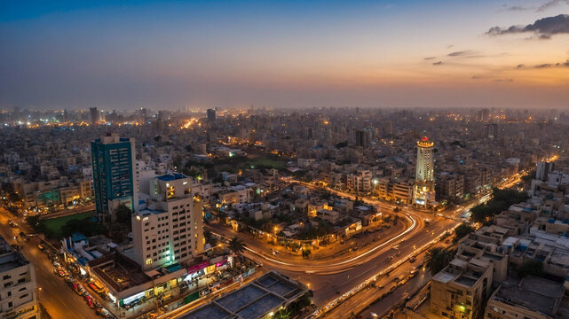

Karachi , city and capital of Sindh province, southern Pakistan. It is the country’s largest city and principal seaport and is a major commercial and industrial centre. Karachi is located on the coast of the Arabian Sea immediately northwest of the Indus River delta. The city has been variously called Caranjee, Crochey, Krotchey, Currachee, and Kurrachee, all of which are believed to be variants of the same name. In the 18th century it was known as Kalachi-jo-Goth,meaning “the village of Kalachi” (Kalachi being the name of an erstwhile head of the settlement). The impetus to Karachi’s development originally came from its role as the port serving the Indus River valley and the Punjab region of British India. The development of air travel subsequently increased Karachi’s importance. It is also the port serving the landlocked country of Afghanistan. Area city, 228 square miles (591 squre km); Greater Karachi, 560 square miles (1,450 square km). Pop. (2017) city, 14,916,456; (2018 est.) urban agglom., 15,400,000.
Karachi Harbour, on the shores of which the city is situated, is a safe and beautiful natural harbour. It is protected from storms by Kiamāri Island, Manora Island, and Oyster Rocks, which together block the greater part of the harbour entrance in the west.
A low-lying coastal strip runs along the shore of the harbour. Away from the coast, the ground rises gently to the north and east to form a large plain, from 5 to 120 feet (1.5 to 37 metres) above sea level, on which the city of Karachi is built. The Malīr River, a seasonal stream, passes through the eastern part of the city, and the Layāri River, also seasonal, runs through the most densely populated northern section. Some ridges and isolated hills occur in the north and east; Mango Pīr, the highest elevation, is 585 feet high.
The 560 square miles that constituted the Federal Capital Area of Pakistan in 1948 are considered, for all practical purposes, to form the Karachi metropolitan area. Almost half of the area is occupied by the city and its suburbs, and the surrounding 332 square miles consist of agricultural land and wasteland.
The most striking aspect of Karachi’s layout is the west-to-east parallel alignment of the four arterial roads—Nishter Road (formerly called Lawrence Road), Mohammed Ali Jinnah Road (formerly Bandar Road), Shahrah-e-Liaquat (Frere Road), and I.I. Chundrigar Road (McCleod Road). Beginning at Mereweather Tower in the vicinity of the port, these roads run through the centre of the city. Several roads, such as Napier Road, Dr. Zia-ud-din Ahmed Road (Kutchery Road), and Garden Road, cut perpendicularly across these arteries from north to south.
The old town lies near the port, to the north of M.A. Jinnah Road, and with extensions stretching along the material roads for over a mile; unplanned, it is reminiscent of medieval towns of the Middle East or Europe. East of the old town are such districts as the Drigh Cantonment, the Civil Lines (residential areas for senior civil service officers), and the Saddar Bazar. This area is planned on a checkerboard pattern and shows European characteristics. Beyond this stretch several radial roads, along which growth has taken the form of neighbourhood units; each unit is laid out with straight, broad roads connected by smaller streets.
The land-use pattern of the city is complex. In the central area, the preponderance of residential property tends to form a matrix within which all other functions are distributed. There is, however, a marked concentration of commercial buildings at the western ends of M.A. Jinnah Road and I.I. Chundrigar Road. Wholesale businesses are located in the old town, retail businesses along M.A. Jinnah Road and in Saddar Bazar, and the government offices on Shahrah-e-Liaquat, near Saddar. The outer areas are dominated by dormitory suburbs interspersed with a scattering of cantonments (military quarters), agricultural tracts, saltworks, airports, railway stations, and marshaling yards.
The city proper has old and decayed buildings, occupied by members of the middle and lower income groups. Farther from the city centre are modern bungalows occupied by richer persons; the outer zone is occupied by workers.
Karachi has a variety of types of buildings. The central area contains apartment bungalows, barracks, and multistoried buildings; the outer areas are characterized by bungalows, blocks of flats, and quarters (streets of small houses). Buildings of the British period were constructed with stone in Western styles of architecture; other stone buildings in the central city show a blending of Eastern and Western styles and have towers, domes, pillars, arches, hanging balconies, and rectangular courtyards. Buildings in the outer areas are built of cement blocks, and with few exceptions they show no uniformity in design. Some follow contemporary North American design, while others incorporate features of traditional Muslim architecture.
TOP